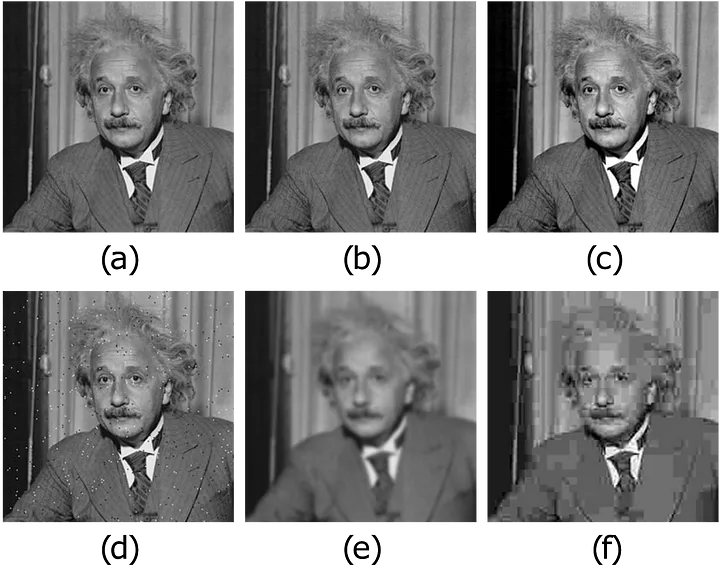

Vision Transformers and Loss Design#
This notebook completes the overview of end-to-end architectures by introducing Vision Transformers (ViT) for image-to-image tasks. We explain patching, self-attention, and encoder-decoder Transformer designs, and then discuss how the choice of loss function affects the visual quality of reconstructions. The notebook concludes with a compact comparison of the main architectures covered in this chapter.
Vision Transformers (ViT)#
So far, all the architectures we discussed were based on convolutions. This is natural for image reconstruction, since convolutions process local information very efficiently and inherit strong inductive biases such as locality and translation equivariance. However, modern image-processing architectures are not restricted to convolutions. A second major family of models is based on the Transformer architecture, originally introduced for sequence processing in natural language.
The key idea behind the Vision Transformer (ViT) is simple: instead of processing the image pixel by pixel or feature map by feature map, we first split the image into a sequence of patches, and then process that sequence with a Transformer encoder.
For image classification, this sequence is usually mapped to a single output token. For image-to-image tasks, such as deblurring, denoising, or super-resolution, this is not enough: after the Transformer encoder, one also needs a decoder that maps the encoded tokens back to an image.
From images to patch tokens#
Suppose that an image \(x \in \mathbb{R}^{C \times H \times W}\) is divided into non-overlapping patches of size \(P \times P\). The total number of patches is then
Each patch is a tensor in \(\mathbb{R}^{C \times P \times P}\). By flattening it, we obtain a vector in \(\mathbb{R}^{CP^2}\). A ViT does not work directly on these raw vectors: each flattened patch is first projected into an embedding space of dimension \(d\) through a learned linear map. If we denote by \(x^{(j)}\) the \(j\)-th patch, its token representation is
where \(E \in \mathbb{R}^{d \times CP^2}\) is the patch-embedding matrix and \(e_j^{\mathrm{pos}} \in \mathbb{R}^d\) is a learned positional embedding.
The positional term is essential. Unlike CNNs, Transformers do not automatically know where a patch is located in the image. Without positional information, the model would treat the input as an unordered set of patches.
Note
In image-to-image reconstruction tasks, one usually does not use the classification token employed in standard ViT models for image classification. The reason is that we want to preserve information about all patches, not compress the image into a single global representation.
How the Transformer encoder works#
Once the image has been converted into a sequence of patch tokens, the sequence is processed by a stack of Transformer blocks. The central operation in each block is the self-attention mechanism.
Given a matrix of tokens \(Z \in \mathbb{R}^{N \times d}\), the model computes three learned projections:
where \(W_Q, W_K, W_V \in \mathbb{R}^{d \times d_k}\) are trainable matrices. The self-attention output is then defined as
This formula has a very important interpretation: every patch token is allowed to interact with every other patch token. In this way, the model can capture long-range dependencies much more directly than a standard CNN.
In practice, one usually employs multi-head attention, meaning that several attention maps are computed in parallel and then combined. Each Transformer block also contains:
a residual connection around the self-attention layer;
a normalization layer, usually
LayerNorm;a feed-forward multilayer perceptron applied independently to each token;
a second residual connection around that feed-forward part.
This yields a model that alternates global token mixing through attention and pointwise nonlinear processing through the MLP.
Why ViT can be useful for inverse problems#
For inverse problems, the main attraction of ViT architectures is that they can model global interactions very naturally. This is appealing whenever the artifact is not purely local. For example, in tasks where the measurement process spreads information across the whole image, or where long-range consistency is crucial, a Transformer encoder may capture interactions that a small CNN would need many layers to represent.
At the same time, ViTs also have clear drawbacks:
they usually require more data than CNNs because they have weaker built-in inductive biases;
patching introduces a coarse discretization of the image, which can make fine details harder to recover;
the computational cost of attention grows quadratically with the number of tokens.
For these reasons, ViTs are often most effective either in large-data regimes or in hybrid architectures where convolutions are used together with attention.
A particularly important design choice is the patch size \(P\). If \(P\) is small, then the number of tokens increases, the model retains finer spatial detail, and the decoder receives a richer representation of the image. However, the attention cost also grows significantly because it depends on the square of the number of tokens. If \(P\) is large, the model becomes cheaper and easier to train, but each token summarizes a larger portion of the image and fine details may be lost more easily. In practice, patch size controls a trade-off between resolution of the token representation and computational efficiency.
ViT for image-to-image reconstruction#
To use a ViT for an image-to-image task, the most common strategy is to split the model into two parts:
an encoder, which transforms the input image into a sequence of contextualized patch tokens;
a decoder, which maps those tokens back to the image domain.
The decoder can be chosen in several ways. Typical options are:
a linear patch decoder, which predicts pixel values patch by patch;
a convolutional decoder, which reshapes the tokens back to a low-resolution feature map and upsamples it;
a UNet-like decoder, if one wants a stronger multi-scale inductive bias.
Below we implement a simple example in which the ViT acts as the encoder, while the decoder is chosen to be a small convolutional decoder based on a transposed convolution followed by a final convolution. This is enough to illustrate the main idea without making the architecture unnecessarily heavy.
import torch
from torch import nn
class PatchEmbed(nn.Module):
def __init__(self, in_ch=1, embed_dim=128, patch_size=16):
super().__init__()
self.patch_size = patch_size
self.proj = nn.Conv2d(
in_channels=in_ch,
out_channels=embed_dim,
kernel_size=patch_size,
stride=patch_size,
)
def forward(self, x):
z = self.proj(x) # (B, d, H/P, W/P)
B, d, H_p, W_p = z.shape
z = z.flatten(2).transpose(1, 2) # (B, N, d)
return z, (H_p, W_p)
class TransformerEncoderBlock(nn.Module):
def __init__(self, embed_dim, num_heads, mlp_dim):
super().__init__()
self.norm1 = nn.LayerNorm(embed_dim)
self.attn = nn.MultiheadAttention(embed_dim, num_heads, batch_first=True)
self.norm2 = nn.LayerNorm(embed_dim)
self.mlp = nn.Sequential(
nn.Linear(embed_dim, mlp_dim),
nn.GELU(),
nn.Linear(mlp_dim, embed_dim),
)
def forward(self, z):
h = self.norm1(z)
attn_out, _ = self.attn(h, h, h, need_weights=False)
z = z + attn_out
z = z + self.mlp(self.norm2(z))
return z
class ViTReconstructor(nn.Module):
def __init__(
self,
img_size=256,
patch_size=16,
in_ch=1,
out_ch=1,
embed_dim=128,
depth=4,
num_heads=4,
mlp_dim=256,
):
super().__init__()
assert img_size % patch_size == 0, 'img_size must be divisible by patch_size.'
self.grid_size = img_size // patch_size
self.num_patches = self.grid_size ** 2
self.patch_embed = PatchEmbed(in_ch=in_ch, embed_dim=embed_dim, patch_size=patch_size)
self.pos_embed = nn.Parameter(torch.zeros(1, self.num_patches, embed_dim))
self.encoder = nn.Sequential(*[
TransformerEncoderBlock(embed_dim=embed_dim, num_heads=num_heads, mlp_dim=mlp_dim)
for _ in range(depth)
])
self.decoder = nn.Sequential(
nn.ConvTranspose2d(
in_channels=embed_dim,
out_channels=embed_dim // 2,
kernel_size=patch_size,
stride=patch_size,
),
nn.ReLU(),
nn.Conv2d(embed_dim // 2, out_ch, kernel_size=3, padding=1),
)
def forward(self, x):
z, (H_p, W_p) = self.patch_embed(x)
z = z + self.pos_embed[:, :z.shape[1], :]
z = self.encoder(z)
feat = z.transpose(1, 2).reshape(x.shape[0], -1, H_p, W_p)
out = self.decoder(feat)
return out
vit_model = ViTReconstructor(img_size=256, patch_size=16, in_ch=1, out_ch=1)
x = torch.rand(2, 1, 256, 256)
y = vit_model(x)
print('Input shape:', tuple(x.shape))
print('Output shape:', tuple(y.shape))
Input shape: (2, 1, 256, 256)
Output shape: (2, 1, 256, 256)
The code above is not meant to be the final word on ViT architectures for inverse problems, but it makes the logic explicit.
The patch embedding plays the role of turning the image into a sequence.
The Transformer encoder enriches each token by letting it interact with all other tokens through self-attention.
The decoder maps the token representation back into the image domain.
In this specific implementation, the decoder is convolutional. This is often a sensible choice in imaging, because once global information has been exchanged by the Transformer encoder, the local structure of the image can be refined efficiently by convolutions.
A final point is worth stressing. While CNNs and UNets are often easier to train on medium-size imaging datasets, ViT-based models can become highly competitive when the training set is large, when the artifacts have strong global structure, or when one combines attention and convolution in a hybrid architecture. In that sense, ViTs should not be seen as replacing CNNs entirely, but rather as extending the set of architectural tools available for image reconstruction.
A final methodological warning concerns pure end-to-end methods in general. Even when they produce visually impressive reconstructions, they do not explicitly enforce data consistency with the measurement model. As a consequence, their behavior can deteriorate significantly when the noise level changes, when the acquisition operator is slightly mismatched, or when the test images differ from the training distribution. This does not make end-to-end methods useless, but it does mean that one should evaluate them with care and remember that visual quality alone is not enough to guarantee reliability in inverse problems.
Training and Saving a ViT Reconstructor#
The same supervised strategy used for CNNs and residual CNNs can be applied to a ViT-based reconstructor. We again generate motion-blurred and noisy measurements from the clean Mayo slices, train the model with MSELoss, and then save the learned parameters in ../weights/ViT.pth. The code also reloads the checkpoint immediately, so the save/load pattern remains explicit.
import glob
import importlib.util
from pathlib import Path
import matplotlib.pyplot as plt
import torch
from PIL import Image
from torch.utils.data import Dataset, DataLoader
from torchvision import transforms
from tqdm.auto import tqdm
here = Path.cwd().resolve()
for base in (here, *here.parents):
if (base / 'weights').exists() and (base / 'Mayo').exists():
book_root = base
break
else:
raise FileNotFoundError('Could not locate the course root containing Mayo and weights.')
for base in (here, *here.parents):
if (base / 'IPPy').exists():
ippy_root = base / 'IPPy'
break
else:
raise FileNotFoundError('Could not locate the local IPPy package.')
operators_spec = importlib.util.spec_from_file_location('course_ippy_operators', ippy_root / 'operators.py')
operators = importlib.util.module_from_spec(operators_spec)
operators_spec.loader.exec_module(operators)
weights_dir = book_root / 'weights'
weights_dir.mkdir(exist_ok=True)
def get_device():
if torch.cuda.is_available():
return 'cuda'
try:
if torch.backends.mps.is_available():
return 'mps'
except AttributeError:
pass
return 'cpu'
def gaussian_noise(y, noise_level):
e = torch.randn_like(y, device=y.device)
return e / torch.norm(e) * torch.norm(y) * noise_level
class MayoDataset(Dataset):
def __init__(self, data_path, data_shape):
super().__init__()
self.data_path = data_path
self.data_shape = data_shape
self.fname_list = glob.glob(f'{data_path}/*/*.png')
def __len__(self):
return len(self.fname_list)
def __getitem__(self, idx):
img_path = self.fname_list[idx]
x = Image.open(img_path).convert('L')
x = transforms.Compose([
transforms.ToTensor(),
transforms.Resize(self.data_shape),
])(x)
return x
device = get_device()
train_dataset = MayoDataset(data_path=str(book_root / 'Mayo' / 'train'), data_shape=256)
test_dataset = MayoDataset(data_path=str(book_root / 'Mayo' / 'test'), data_shape=256)
train_loader = DataLoader(train_dataset, batch_size=4, shuffle=True)
test_loader = DataLoader(test_dataset, batch_size=4, shuffle=False)
K = operators.Blurring(
img_shape=(256, 256),
kernel_type='motion',
kernel_size=9,
motion_angle=20,
)
torch.manual_seed(0)
vit_model = ViTReconstructor(
img_size=256,
patch_size=16,
in_ch=1,
out_ch=1,
embed_dim=96,
depth=3,
num_heads=4,
mlp_dim=192,
).to(device)
optimizer = torch.optim.Adam(vit_model.parameters(), lr=1e-3)
loss_fn = nn.MSELoss()
num_epochs = 50
noise_level = 0.01
history = []
weights_path = weights_dir / 'ViT.pth'
for epoch in range(num_epochs):
vit_model.train()
epoch_loss = 0.0
progress_bar = tqdm(train_loader, desc=f'Epoch {epoch + 1}/{num_epochs}', leave=True)
for step, x_batch in enumerate(progress_bar, start=1):
x_batch = x_batch.to(device)
with torch.no_grad():
y_batch = K(x_batch)
y_batch = y_batch + gaussian_noise(y_batch, noise_level=noise_level)
prediction = vit_model(y_batch)
loss = loss_fn(prediction, x_batch)
optimizer.zero_grad()
loss.backward()
optimizer.step()
epoch_loss += loss.item()
progress_bar.set_postfix(batch_loss=f'{loss.item():.6f}', avg_loss=f'{epoch_loss / step:.6f}')
history.append(epoch_loss / len(train_loader))
print(f'Epoch {epoch + 1}: training loss = {history[-1]:.6f}')
torch.save(vit_model.state_dict(), weights_path)
print(f'Saved ViT weights to: {weights_path}')
reloaded_vit = ViTReconstructor(
img_size=256,
patch_size=16,
in_ch=1,
out_ch=1,
embed_dim=96,
depth=3,
num_heads=4,
mlp_dim=192,
)
reloaded_vit.load_state_dict(torch.load(weights_path, map_location='cpu', weights_only=True))
reloaded_vit = reloaded_vit.to(device)
reloaded_vit.eval()
with torch.no_grad():
x_test = next(iter(test_loader))[0:1].to(device)
y_test = K(x_test)
y_test = y_test + gaussian_noise(y_test, noise_level=noise_level)
x_pred = reloaded_vit(y_test)
plt.figure(figsize=(15, 4))
plt.subplot(1, 4, 1)
plt.imshow(x_test.cpu().squeeze(), cmap='gray')
plt.title('Ground truth')
plt.axis('off')
plt.subplot(1, 4, 2)
plt.imshow(y_test.cpu().squeeze(), cmap='gray')
plt.title('Measurement')
plt.axis('off')
plt.subplot(1, 4, 3)
plt.imshow(x_pred.cpu().squeeze(), cmap='gray')
plt.title('Reloaded ViT')
plt.axis('off')
plt.subplot(1, 4, 4)
plt.plot(history)
plt.title('Training loss')
plt.xlabel('Epoch')
plt.grid(alpha=0.3)
plt.tight_layout()
plt.show()
Metrics for Image Quality Evaluation#
Once a model has been trained, one still needs to evaluate the quality of the reconstructed images. This is a subtle point. In imaging, a reconstruction may look visually convincing and still be quantitatively inaccurate, or it may obtain a very good numerical score while appearing unsatisfactory to the human eye. For this reason, it is common to report several complementary metrics rather than relying on a single number.
PSNR#
One of the most classical metrics is the Peak Signal-to-Noise Ratio (PSNR). It is derived from the mean squared error and is usually defined as
where MAX is the largest admissible pixel value, e.g. 1 for normalized images in \([0,1]\). A larger PSNR corresponds to a smaller pixel-wise error.
PSNR is easy to compute and is still widely used, especially in denoising, deblurring, and super-resolution benchmarks. However, its main limitation is also its origin: since it is directly tied to MSE, it remains a pixel-wise fidelity measure. Therefore, it may fail to reflect what humans actually perceive as a good reconstruction.
SSIM#
A second widely used metric is the Structural Similarity Index Measure (SSIM) [18]. Unlike PSNR, SSIM is not purely pixel-wise. It compares local image patches in terms of luminance, contrast, and structure, and is therefore much more sensitive to structural distortions.
SSIM usually takes values between 0 and 1, where values closer to 1 indicate higher similarity. In practice, SSIM often correlates better with human visual judgment than PSNR, especially when one is interested in structural preservation.
Still, SSIM also has limitations. It is more perceptual than PSNR, but it is not a perfect model of human vision. It may still overestimate the quality of reconstructions with unrealistic textures or miss certain distortions that look obvious to the eye.
LPIPS#
A more modern metric is LPIPS (Learned Perceptual Image Patch Similarity) [19]. The idea is to compare two images not directly in pixel space, but in the feature space of a deep neural network. If two images activate similar internal features in a pretrained model, then LPIPS considers them perceptually close.
This usually makes LPIPS much more sensitive to perceptual realism than PSNR or SSIM. In many modern image-generation and restoration papers, LPIPS is reported precisely because it captures aspects of image quality that classical metrics miss.
However, LPIPS must also be interpreted with care:
it depends on the pretrained network used for feature extraction;
it is more expensive to compute than PSNR or SSIM;
in specialized domains such as medical imaging, the features learned on natural-image datasets may not be perfectly aligned with the relevant notion of quality.
No single metric is enough#
A central teaching point is therefore the following: no single metric fully captures image quality.
PSNR is useful for numerical fidelity and is easy to interpret, but it is strongly tied to MSE.
SSIM is more sensitive to structure, but it is still only a proxy for perception.
LPIPS is often more perceptual, but it depends on pretrained features and may be domain-dependent.
For this reason, in inverse problems one often reports at least two complementary metrics, for example PSNR together with SSIM, and then inspects reconstructions visually. In scientific applications, especially in medical imaging, the final evaluation should also depend on the downstream task and on whether the reconstructed image remains consistent with the measured data.
import numpy as np
import torch
from skimage.metrics import peak_signal_noise_ratio, structural_similarity
# Toy example: a clean image and a slightly degraded version
x_true_np = np.linspace(0, 1, 256 * 256, dtype=np.float32).reshape(256, 256)
x_pred_np = np.clip(0.95 * x_true_np + 0.03 * np.random.randn(256, 256).astype(np.float32), 0.0, 1.0)
psnr_val = peak_signal_noise_ratio(x_true_np, x_pred_np, data_range=1.0)
ssim_val = structural_similarity(x_true_np, x_pred_np, data_range=1.0)
print(f'PSNR: {psnr_val:.3f} dB')
print(f'SSIM: {ssim_val:.4f}')
try:
import lpips
lpips_metric = lpips.LPIPS(net='alex')
x_true_lp = torch.tensor(x_true_np).unsqueeze(0).unsqueeze(0).repeat(1, 3, 1, 1)
x_pred_lp = torch.tensor(x_pred_np).unsqueeze(0).unsqueeze(0).repeat(1, 3, 1, 1)
# LPIPS expects inputs approximately in [-1, 1]
x_true_lp = 2 * x_true_lp - 1
x_pred_lp = 2 * x_pred_lp - 1
lpips_val = lpips_metric(x_true_lp, x_pred_lp).item()
print(f'LPIPS: {lpips_val:.4f}')
except ImportError:
print('LPIPS package not installed. To compute LPIPS offline, install the `lpips` package.')
Loading the Saved Models and Comparing Them#
Once the three checkpoints have been produced, we can load them in a single notebook and compare their behavior on the same corrupted measurements. The comparison below is both visual and quantitative: we display one representative reconstruction and we also report the mean MSE, PSNR, and SSIM over a small test subset.
from skimage.metrics import peak_signal_noise_ratio, structural_similarity
class SimpleCNN(nn.Module):
def __init__(self, in_ch, out_ch, n_filters, kernel_size=3):
super().__init__()
self.conv1 = nn.Conv2d(in_channels=in_ch, out_channels=n_filters, kernel_size=kernel_size, padding='same')
self.conv2 = nn.Conv2d(in_channels=n_filters, out_channels=n_filters, kernel_size=kernel_size, padding='same')
self.conv3 = nn.Conv2d(in_channels=n_filters, out_channels=out_ch, kernel_size=kernel_size, padding='same')
self.relu = nn.ReLU()
def forward(self, x):
h = self.relu(self.conv1(x))
h = self.relu(self.conv2(h))
return self.conv3(h)
class ResCNN(nn.Module):
def __init__(self, in_ch, out_ch, n_filters, kernel_size=3):
super().__init__()
self.conv1 = nn.Conv2d(in_channels=in_ch, out_channels=n_filters, kernel_size=kernel_size, padding='same')
self.conv2 = nn.Conv2d(in_channels=n_filters, out_channels=n_filters, kernel_size=kernel_size, padding='same')
self.conv3 = nn.Conv2d(in_channels=n_filters, out_channels=out_ch, kernel_size=kernel_size, padding='same')
self.relu = nn.ReLU()
self.tanh = nn.Tanh()
def forward(self, x):
h = self.relu(self.conv1(x))
h = self.relu(self.conv2(h))
return self.tanh(self.conv3(h)) + x
cnn_model = SimpleCNN(in_ch=1, out_ch=1, n_filters=32).to(device)
cnn_model.load_state_dict(torch.load(weights_dir / 'CNN.pth', map_location='cpu', weights_only=True))
cnn_model.eval()
rescnn_model = ResCNN(in_ch=1, out_ch=1, n_filters=32).to(device)
rescnn_model.load_state_dict(torch.load(weights_dir / 'ResCNN.pth', map_location='cpu', weights_only=True))
rescnn_model.eval()
vit_model = ViTReconstructor(
img_size=256,
patch_size=16,
in_ch=1,
out_ch=1,
embed_dim=96,
depth=3,
num_heads=4,
mlp_dim=192,
).to(device)
vit_model.load_state_dict(torch.load(weights_dir / 'ViT.pth', map_location='cpu', weights_only=True))
vit_model.eval()
models = {
'CNN': cnn_model,
'ResCNN': rescnn_model,
'ViT': vit_model,
}
results = {name: {'MSE': [], 'PSNR': [], 'SSIM': []} for name in models}
noise_level = 0.01
num_eval = 8
visual_data = None
torch.manual_seed(123)
for idx in range(num_eval):
x_true = test_dataset[idx].unsqueeze(0).to(device)
with torch.no_grad():
y_delta = K(x_true)
y_delta = y_delta + gaussian_noise(y_delta, noise_level=noise_level)
reconstructions = {name: model(y_delta).clamp(0.0, 1.0) for name, model in models.items()}
x_true_np = x_true.squeeze().cpu().numpy()
y_delta_np = y_delta.squeeze().cpu().numpy()
if visual_data is None:
visual_data = {
'x_true': x_true_np,
'y_delta': y_delta_np,
'recons': {name: rec.squeeze().cpu().numpy() for name, rec in reconstructions.items()},
}
for name, rec in reconstructions.items():
rec_np = rec.squeeze().cpu().numpy()
mse_val = float(np.mean((rec_np - x_true_np) ** 2))
psnr_val = peak_signal_noise_ratio(x_true_np, rec_np, data_range=1.0)
ssim_val = structural_similarity(x_true_np, rec_np, data_range=1.0)
results[name]['MSE'].append(mse_val)
results[name]['PSNR'].append(psnr_val)
results[name]['SSIM'].append(ssim_val)
fig, axes = plt.subplots(1, 5, figsize=(18, 4))
axes[0].imshow(visual_data['x_true'], cmap='gray')
axes[0].set_title('Ground truth')
axes[0].axis('off')
axes[1].imshow(visual_data['y_delta'], cmap='gray')
axes[1].set_title('Measurement')
axes[1].axis('off')
for ax, name in zip(axes[2:], ['CNN', 'ResCNN', 'ViT']):
ax.imshow(visual_data['recons'][name], cmap='gray')
ax.set_title(name)
ax.axis('off')
plt.tight_layout()
plt.show()
print('Average metrics over', num_eval, 'test images')
for name in ['CNN', 'ResCNN', 'ViT']:
mse_mean = np.mean(results[name]['MSE'])
psnr_mean = np.mean(results[name]['PSNR'])
ssim_mean = np.mean(results[name]['SSIM'])
print(f"{name:>6} | MSE: {mse_mean:.6f} | PSNR: {psnr_mean:.3f} dB | SSIM: {ssim_mean:.4f}")
Guiding the Model via Loss Function Selection#
Up to this point, our default choice for the loss function has been MSELoss (Mean Squared Error). While it generally performs reasonably well, it can be suboptimal in specific scenarios, particularly when focusing on fine details within an image is crucial. As we have previously noted, meaningful information in images is often local in nature. Consequently, pixel-wise metrics such as MSE fail to capture pattern information or structural details as effectively as the human visual system does when assessing good image quality.
A practical example of this issue is shown in the figure below: often, multiple images that appear significantly different to the human eye can exhibit exactly the same MSE distance from a ground-truth image. Therefore, selecting the best candidate solution among them cannot be based solely on the MSE metric.
{kind=link}

To address this limitation, a significant line of research in neural-network-based image reconstruction focuses on developing better loss functions, or combinations of loss functions, to achieve visually superior reconstruction quality. Below, we list and briefly discuss some common and effective loss functions:
\(\ell_{L1}\) (L1 Loss / MAE): The \(\ell_{L1}\) loss, also known as Mean Absolute Error (MAE), is the \(\ell_1\)-norm counterpart of MSELoss, which uses the \(\ell_2\) norm. It is readily available in PyTorch via
torch.nn.L1Loss()and is defined as:\[ \ell_{L1}(y_{true}, y_{pred}) = \frac{1}{N} \sum_{i=1}^N || y^{(i)}_{true} - y^{(i)}_{pred} ||_1, \]where \(|| y^{(i)}_{true} - y^{(i)}_{pred} ||_1\) denotes the sum over all pixels of the absolute value of the difference between the true image \(y^{(i)}_{true}\) and the corresponding prediction \(y^{(i)}_{pred}\). While \(\ell_{L1}\) is often associated with producing sharper images than MSELoss, it has the theoretical drawback of not being differentiable at zero. In practice, subgradient methods are effective, but this can sometimes lead to less stable training than MSE. Furthermore, it still suffers from limitations similar to those of MSELoss, since it remains a pixel-wise metric and may therefore fail to capture structural context.
\(\ell_{Fourier}\) (Fourier Loss): The \(\ell_{Fourier}\) loss exploits the observation that high frequencies in an image, representing fine details and textures, are often harder for convolution-based neural networks to reconstruct accurately than low frequencies, which represent overall intensity and large structures. Moreover, accurately recovering these fine details often makes the reconstructed image appear sharper and more realistic to the human eye. It is typically defined based on the difference in the Fourier domain:
\[ \ell_{Fourier}(y_{true}, y_{pred}) = \frac{1}{N} \sum_{i=1}^N || HP(\mathcal{F}y^{(i)}_{true} - \mathcal{F}y^{(i)}_{pred}) ||_p^p, \]Here, \(\mathcal{F}\) denotes the 2D Fourier transform operator, \(HP(\cdot)\) represents a high-pass filter, which attenuates or removes low frequencies while preserving high frequencies, and \(|| \cdot ||_p^p\) usually indicates the squared \(\ell_2\) norm (\(p=2\)) or the \(\ell_1\) norm (\(p=1\)). Note that while this loss operates pixel-wise in the Fourier domain, each Fourier coefficient relates to global spatial-frequency content, such as patterns or textures, in the image domain. Therefore, it can be considered less strictly local than pixel-wise losses in the image domain and potentially closer to how humans perceive certain aspects of image quality compared to MSELoss or \(\ell_{L1}\). However, a significant drawback is that focusing primarily on high frequencies neglects low-frequency information. Thus, \(\ell_{Fourier}\) is typically used in combination with other losses, such as MSE or \(\ell_{L1}\), to ensure that the overall structure and context of the image are also reconstructed accurately.
\(\ell_{SSIM}\) (SSIM Loss): An alternative approach focusing on perceptual similarity is \(\ell_{SSIM}\). It is based on the Structural Similarity Index Measure (SSIM), a widely used metric designed to quantify the visual similarity between two images. SSIM is known for correlating well with human perception of image quality because it compares local patches based on luminance, contrast, and structure. SSIM typically outputs a value in which 1 indicates higher similarity. Since neural-network training aims to minimize the loss, \(\ell_{SSIM}\) is commonly defined by subtracting the SSIM value from 1:
\[ \ell_{SSIM}(y_{true}, y_{pred}) = \frac{1}{N} \sum_{i=1}^N \left( 1 - SSIM(y^{(i)}_{true}, y^{(i)}_{pred}) \right). \]The \(\ell_{SSIM}\) loss is popular in image-processing tasks because optimizing it often leads to visually pleasing results. This success is partly attributed to SSIM’s mechanism, which analyzes images in terms of local structure and is therefore inherently more sensitive to context than purely pixel-wise metrics.
\(\ell_{Perceptual}\) (Perceptual Loss): Building on the idea of using metrics that are relevant to human perception, Perceptual Losses (\(\ell_{Perceptual}\)) offer another powerful alternative. Instead of comparing pixels directly or relying on hand-crafted metrics such as SSIM, this approach leverages features extracted by a deep neural network, typically one pre-trained on a large dataset such as ImageNet, e.g. VGG or ResNet. The core idea is that the intermediate layers of these networks learn hierarchical representations of visual features, such as edges, textures, and object parts, that are relevant to perception. The \(\ell_{Perceptual}\) loss is computed by comparing these feature representations for the predicted and ground-truth images:
\[ \ell_{Perceptual}(y_{true}, y_{pred}) = \frac{1}{N} \sum_{i=1}^N \sum_{l} \lambda_l || \phi_l(y^{(i)}_{true}) - \phi_l(y^{(i)}_{pred}) ||_p^p, \]where \(\phi_l(y)\) represents the feature-map activation of image \(y\) extracted from a specific layer \(l\) of the pre-trained network, \(|| \cdot ||_p^p\) is typically the \(\ell_1\) (\(p=1\)) or \(\ell_2\) (\(p=2\)) distance computed across the feature-map dimensions, and \(\lambda_l\) are weighting factors used to combine losses from multiple layers. During training, the pre-trained network used for feature extraction, denoted by \(\phi\), is kept frozen, meaning that its weights are not updated. The \(\ell_{Perceptual}\) loss often yields reconstructions that are considered highly realistic and visually detailed, excelling at capturing complex textures and structures. However, it is computationally more expensive than other losses because it requires an additional forward pass through the feature-extractor network. It also introduces a dependency on the specific pre-trained model and the chosen layers, which may require tuning for optimal performance on a given task. Furthermore, a key limitation is its reliance on large pre-trained networks. This can make \(\ell_{Perceptual}\) impractical or unsuitable in applications where such models are not readily available, cannot be deployed easily because of computational or memory constraints, or where features learned on general datasets like ImageNet may not be optimal. This is particularly relevant in specialized domains such as medical imaging, e.g. Computed Tomography (CT), where domain-specific features are crucial and the use of large general-purpose models may be inappropriate or less effective.
Given that each of the aforementioned loss functions, namely \(\ell_{L1}\), \(\ell_{Fourier}\), \(\ell_{SSIM}\), \(\ell_{Perceptual}\), as well as MSE, has distinct advantages and disadvantages, a common and often highly effective strategy in practice is to use a Combination Loss. This approach combines multiple loss functions into a single objective, typically as a weighted sum. For instance, a combination loss \(\ell_{Combined}\) could be formulated as:
where \(\ell_{LossK}\) represents one of the individual loss functions discussed above, such as MSE, \(\ell_{L1}\), \(\ell_{SSIM}\), or \(\ell_{Perceptual}\), and \(\lambda_k \ge 0\) are hyperparameters representing the weight assigned to each component loss. By carefully tuning these weights, researchers and practitioners can try to strike an optimal balance, leveraging the strengths of different losses, such as pixel accuracy from MSE, sharpness from \(\ell_{L1}\), structural fidelity from \(\ell_{SSIM}\), and perceptual realism from \(\ell_{Perceptual}\), while mitigating some of their individual weaknesses. This gives greater flexibility in tailoring the optimization process to the desired reconstruction quality and in finding a suitable compromise among the various trade-offs.
Final Comparison#
At this point, it is useful to summarize the role of the main end-to-end architectures discussed in this chapter.
CNN: the simplest choice. It is local, efficient, easy to train, and provides a very good baseline when the artifact is relatively simple.
ResCNN: a natural improvement over a plain CNN when the task can be interpreted as artifact removal. By learning the residual, the model often generalizes better and reconstructs the clean image more easily.
UNet: the strongest default choice for many image-reconstruction tasks. Its multiscale structure combines local detail and global context effectively, which is why it is so widely used in practice.
ViT: most useful when global structure matters strongly and enough training data are available. It is more flexible in modeling long-range interactions, but usually more expensive and less data-efficient than convolutional models.
In short, if one wants a first reliable architecture, UNet is usually the best default. A plain CNN is an excellent baseline, ResCNN is a natural option for residual-like corruption, and ViT becomes especially appealing when long-range dependencies are important and the dataset is large enough to support Transformer-based training.
Exercises#
Why does a Vision Transformer need positional embeddings once the image has been split into patches?
Explain in your own words why self-attention is attractive when the reconstruction task involves long-range interactions.
What is the main trade-off induced by the patch size in a ViT model?
Compare MSE and L1 as training losses. What kind of difference would you expect in the reconstructed images?
Why might one want to combine several losses instead of using only one?
Code exercise: in the ViT example, change the patch size from
16to8or32. How do the number of tokens and the computational cost change?Code exercise: replace
MSELossbytorch.nn.L1Loss()in one of the reconstruction examples and compare the visual output.
Further Reading#
The original Transformer architecture is introduced in [17], while its adaptation to vision through the Vision Transformer is described in [4]. For a broader overview of deep learning methods for inverse problems in imaging, including architectural and loss-design issues, see [11]. For more general deep-learning background, see [5].